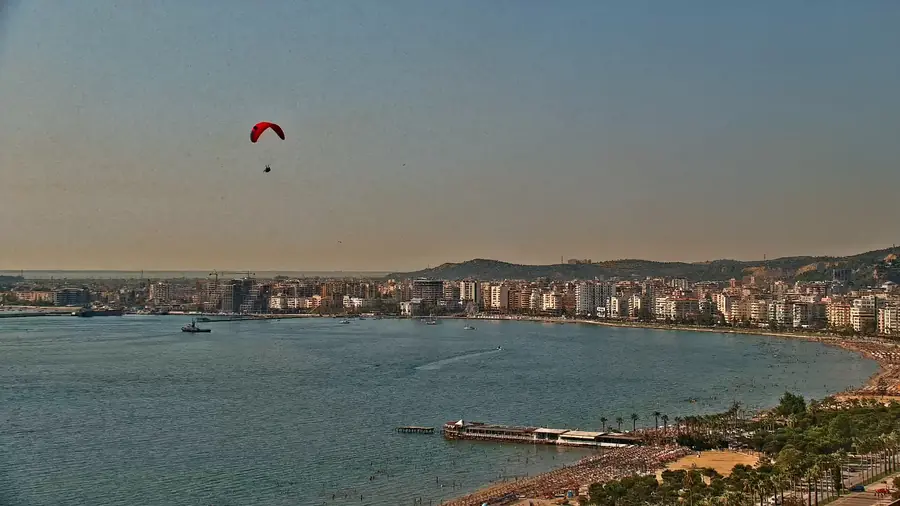
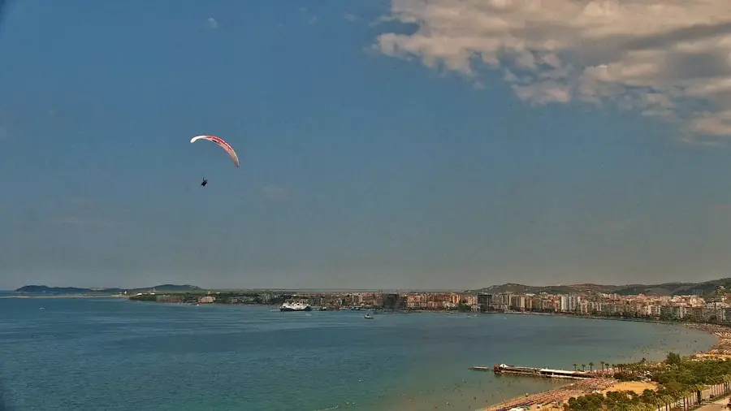
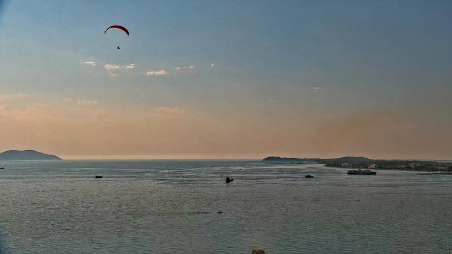
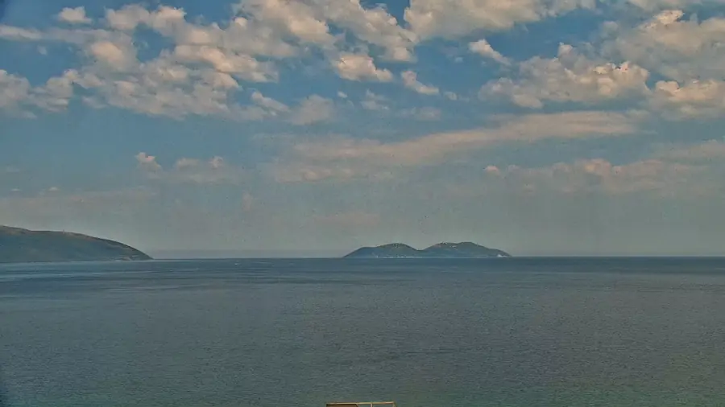
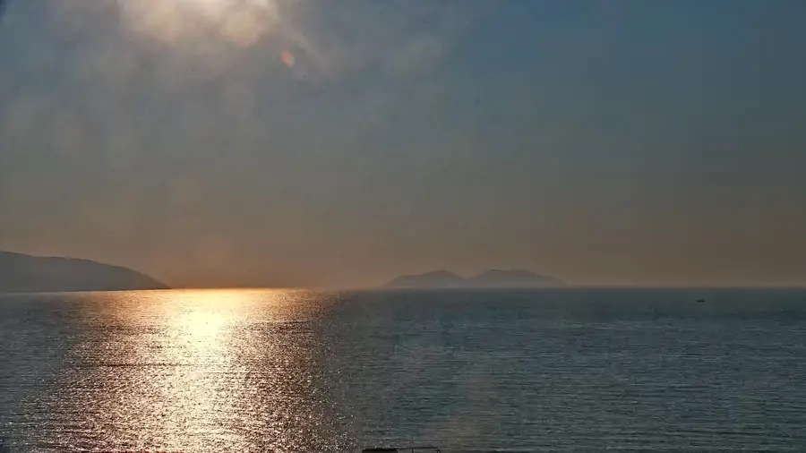

01
Bay & Paragliding
Paragliders cross the bay on suitable days.
Experience the beauty of Vlora Bay in real time, from the Lungomare promenade and Sazan Island to the port, ferries, beaches and Adriatic sunsets.

Paragliders cross the bay on suitable days.

Ferries, boats and daily activity around the harbour.

Shoreline, swimmers and the changing Adriatic colour.
Golden light across Sazan Island and the open sea.
Vlora LIVE is a moving PTZ camera rather than one fixed view. Through the day it reveals the bay, Lungomare, open Adriatic, beaches, port activity and the landmarks that shape Vlora's horizon.


Reach viewers already interested in Vlora, Albania, coastal travel, hospitality and real-time destination viewing. Current audience information and the media kit are available privately.
Vlora LIVE is a 4K coastal webcam streaming live from Vlora, Albania. The camera shows Vlora Bay, Lungomare, the Adriatic Sea, Sazan Island, Karaburun Peninsula, ferries, port movement, beaches, paragliders and sunsets.
The live preview above uses the same public R2 snapshot URL supplied to external webcam directories. That URL is not changed by this redesign.
Yes. The camera streams continuously from Vlora, Albania, with the full 4K stream available on YouTube.
Vlora Bay, Lungomare, the Adriatic Sea, Sazan Island, Karaburun, the port, ferries, yachts, beaches, paragliders and sunsets.
The camera overlooks Vlora Bay near Lungomare. The precise camera position is not published for privacy.
Yes. Tourism, hospitality, travel, real estate and related businesses can contact nightowel03@gmail.com.